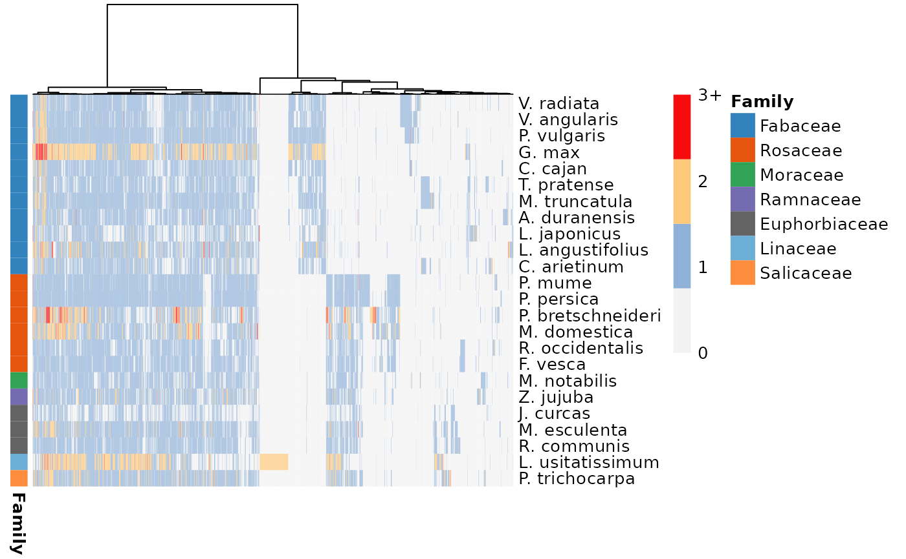
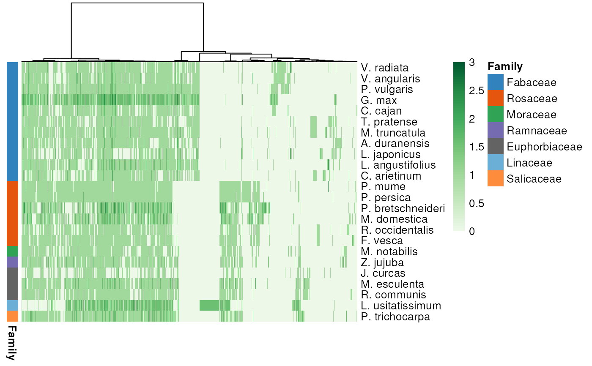

Plot a heatmap of phylogenomic profiles
Usage
plot_profiles(
profile_matrix = NULL,
species_annotation = NULL,
palette = "Greens",
dist_function = stats::dist,
dist_params = list(method = "euclidean"),
clust_function = stats::hclust,
clust_params = list(method = "ward.D"),
cluster_species = FALSE,
show_colnames = FALSE,
discretize = TRUE,
...
)Arguments
- profile_matrix
A matrix of phylogenomic profiles obtained with
phylogenomic_profile.- species_annotation
A 2-column data frame with species IDs in the first column (same as column names of profile matrix), and species annotation (e.g., higher-level taxonomic information) in the second column.
- palette
A character vector of colors or a character scalar with the name of an RColorBrewer palette. Default: "RdYlBu".
- dist_function
Function to use to calculate a distance matrix for synteny clusters. Popular examples include
stats::dist,labdsv::dsvdis, andvegan::vegdist. Default: stats::dist.- dist_params
A list with parameters to be passed to the function specified in parameter dist_function. Default: list(method = "euclidean").
- clust_function
Function to use to cluster the distance matrix returned by the function specified in
dist_function. Examples includestats::hclustandRclusterpp::Rclusterpp.hclust. Default: stats::hclust.- clust_params
A list with additional parameters (if any) to be passed to the function specified in parameter clust_function. Default: list(method = "ward.D").
- cluster_species
Either a logical scalar (TRUE or FALSE) or a character vector with the order in which species should be arranged. TRUE or FALSE indicate whether hierarchical clustering should be applied to rows (species). Ideally, the character vector should contain the order of species in a phylogenetically meaningful way. If users pass a named vector, vector names will be used to rename species. If users have a species tree, they can read it with
treeio::read.tree(), plot it withggtree::ggtree(), and get the species order from the ggtree object withggtree::get_taxa_name(). Default: FALSE.- show_colnames
Logical indicating whether to show column names (i.e., cluster IDs) or not. Showing cluster IDs can be useful when visualizing a small subset of them. When visualizing all clusters, cluster IDs are impossible to read. Default: FALSE.
- discretize
Logical indicating whether to discretize clusters in 4 categories: 0, 1, 2, and 3+. If FALSE, counts will be log2 transformed. Default: TRUE.
- ...
Additional parameters to
pheatmap::pheatmap().
Examples
data(clusters)
profile_matrix <- phylogenomic_profile(clusters)
species_order <- c(
"vra", "van", "pvu", "gma", "cca", "tpr", "mtr", "adu", "lja",
"Lang", "car", "pmu", "ppe", "pbr", "mdo", "roc", "fve",
"Mnot", "Zjuj", "jcu", "mes", "rco", "lus", "ptr"
)
species_names <- c(
"V. radiata", "V. angularis", "P. vulgaris", "G. max", "C. cajan",
"T. pratense", "M. truncatula", "A. duranensis", "L. japonicus",
"L. angustifolius", "C. arietinum", "P. mume", "P. persica",
"P. bretschneideri", "M. domestica", "R. occidentalis",
"F. vesca", "M. notabilis", "Z. jujuba", "J. curcas",
"M. esculenta", "R. communis", "L. usitatissimum", "P. trichocarpa"
)
names(species_order) <- species_names
species_annotation <- data.frame(
Species = species_order,
Family = c(rep("Fabaceae", 11), rep("Rosaceae", 6),
"Moraceae", "Ramnaceae", rep("Euphorbiaceae", 3),
"Linaceae", "Salicaceae")
)
p <- plot_profiles(profile_matrix, species_annotation,
cluster_species = species_order)

p <- plot_profiles(profile_matrix, species_annotation,
cluster_species = species_order,
discretize = FALSE)
